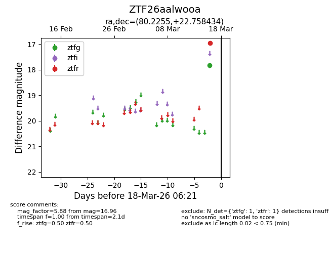
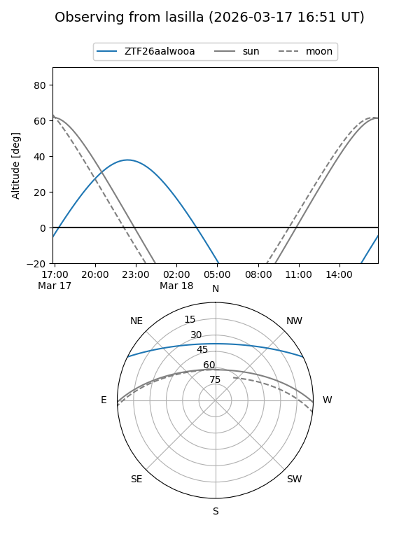
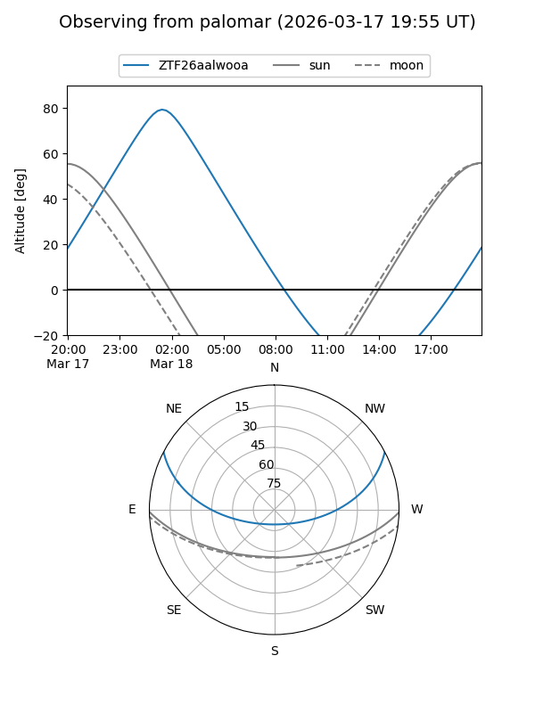

ZTF26aalwooa
Target ZTF26aalwooa at 2026-03-18 06:23
Aliases and brokers:
FINK: link
Lasair: link
ALeRCE: link
alt names
ZTF26aalwooa (ztf,fink_ztf)
Coordinates:
equatorial (ra, dec) = 80.2255,+22.75843
equatorial (HMS+DMS) = 05:20:54.12,+22:45:30.36
galactic (l, b) = (182.1947,-8.01564)
Flags:
Photometry:
last ztfg=17.84, ztfr=16.96
1 ztfg, 1 ztfr detections
Lightcurve

Visibility


Additional plots